ANTHROPICClaude Code
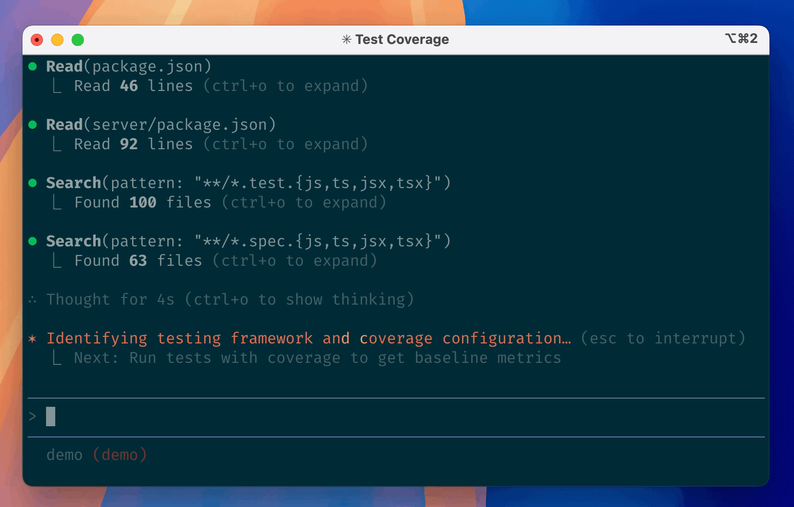
프로젝트 폴더에서 claude 실행
코드베이스 읽기 · 여러 파일 수정 · 명령 실행 · Git · MCP
터미널·IDE·Desktop·Web에서 같은 에이전트 루프제작: DLC LeaderSA jinwoo
30초표지 뒤 최근 AI 소식과 AI 챔피언 경험으로 시작. 별도 인사말·목차 장 없이 바로 2026년 변화로 진입.
PART 01 · RECENT AI NEWS
프론티어 모델 경쟁과 AI 챔피언에서 확인한 변화
상반기 사례로 들어가기 전, 2026년에 달라진 AI 판과 AI 챔피언에서 직접 겪은 이야기를 먼저 공유. 새 모델 이름 자랑이 아니라 우리가 어디에 힘을 써야 하는지를 연결하는 도입부.
2026 · FRONTIER MODEL RACE
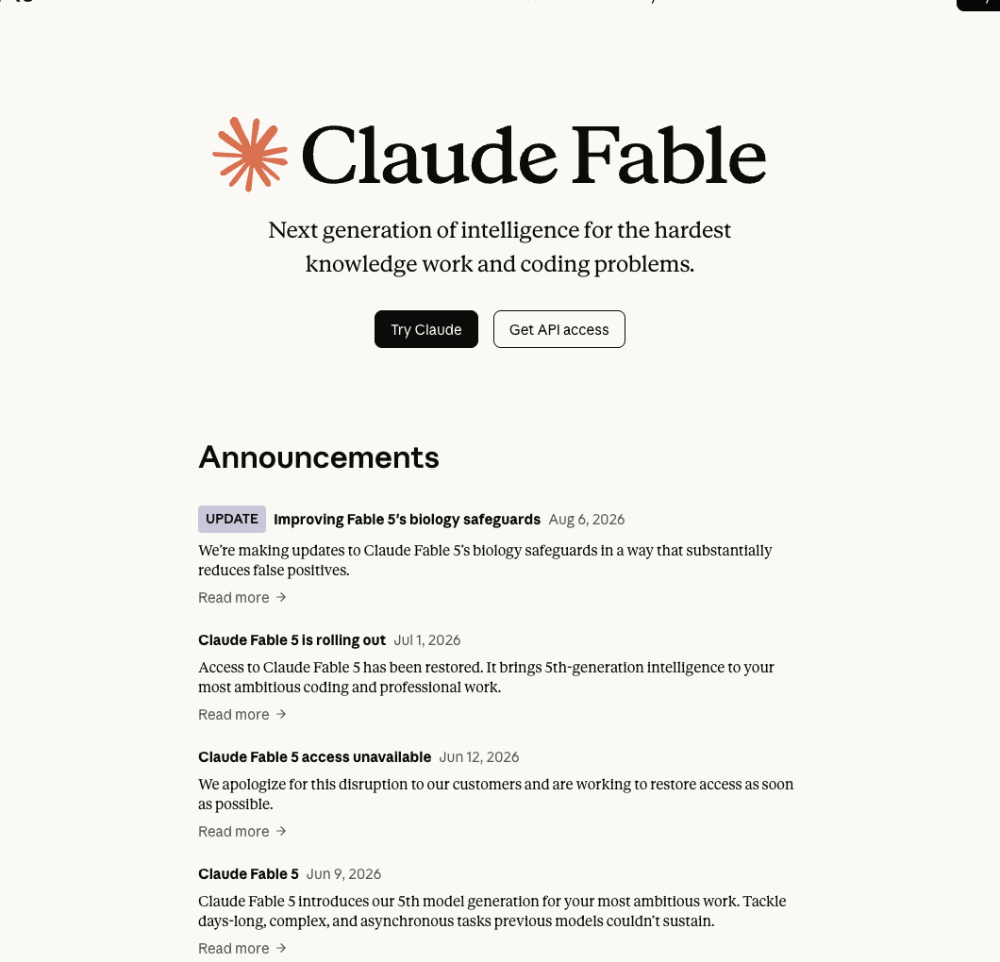
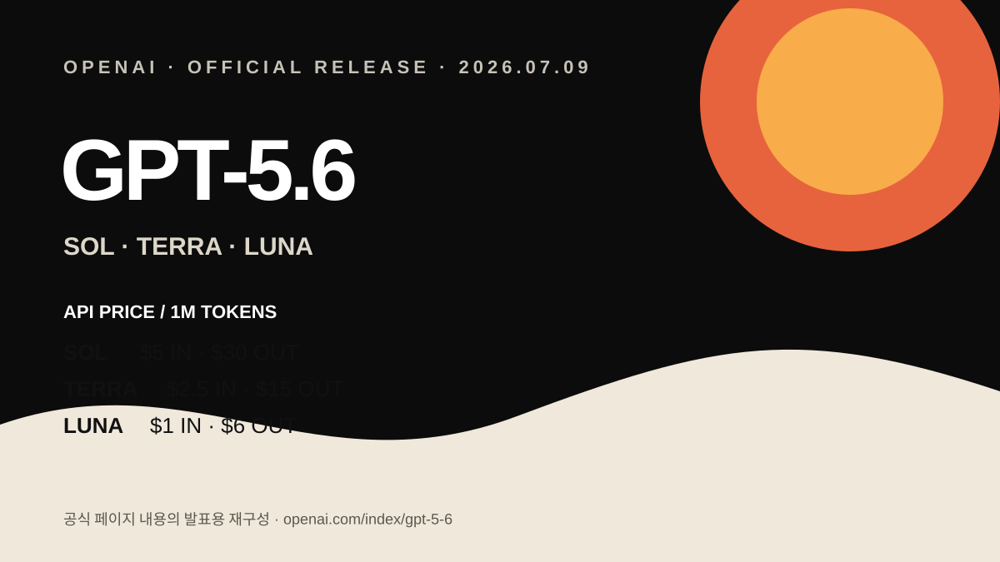
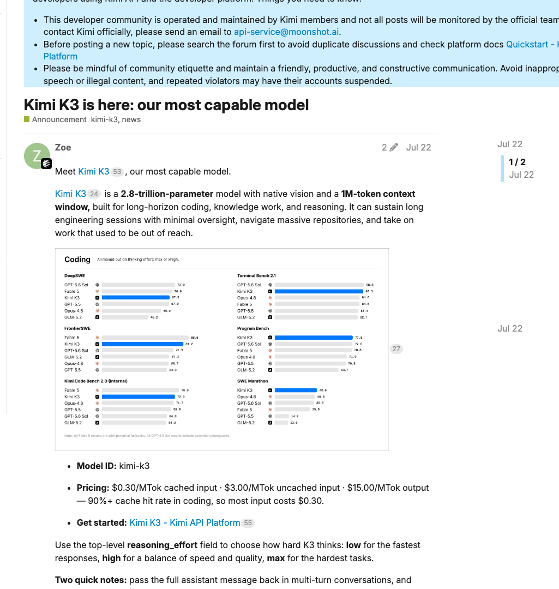
명칭 정정 ‘Kimi 3.0’이 아니라 공식 모델명 Kimi K3
1분2026년에는 Fable 5가 프론티어 경쟁의 체감 기준을 다시 올렸고, 이후 OpenAI GPT-5.6 계열과 중국 Moonshot AI의 Kimi K3가 등장. 이전 세대보다 장기 작업, 코딩, 도구 사용, 시각 판단이 크게 좋아져 처음 보면 충격적인 수준.
다만 정확한 이름은 Kimi 3.0이 아니라 Kimi K3. 화면은 Anthropic과 Moonshot AI의 실제 공식 발표 페이지, GPT-5.6은 OpenAI 공식 페이지가 자동접속을 차단해 공식 출시일·가격을 별도 시각자료로 재구성.
CAPABILITY ≠ DEFAULT MODEL
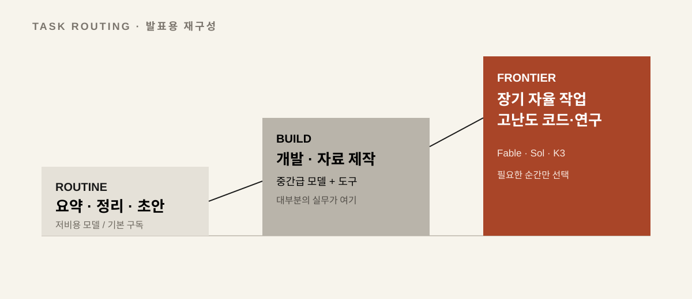
입력 / 출력 1M 토큰
입력 / 출력 1M 토큰
비캐시 입력 / 출력 1M 토큰
막히는 구간만 프론티어 투입
월 20달러 구독에서도 일부 접근 가능 · 장시간 최고 성능은 한도·크레딧이 장벽 · 목표는 모델 소비가 아니라 개발·창작 단계로 이동
1분강한 모델이 나왔다고 모든 작업에 가장 비싼 모델을 붙일 필요는 없음. 요약, 표 정리, 초안은 저비용 모델로 충분하고, 개발·발표자료 제작도 중간급 모델과 도구 조합으로 대부분 해결. 장기 자율 코딩이나 복잡한 연구처럼 막히는 지점에만 Fable·Sol·K3를 쓰는 편이 현실적.
월 20달러 사용자가 전혀 접근하지 못한다는 표현은 현재 공식 조건과 다름. GPT-5.6은 구독자 접근 경로가 있고 Fable도 유료 플랜 접근 경로가 있으나, 지속적인 최고 성능 사용은 별도 사용량 한도나 크레딧 비용이 장벽. 오늘 목표도 비싼 모델 소비가 아니라 개발·창작 단계로 넘어가는 응용.
ACCESS SHOCK · OFFICIAL TIMELINE
5세대 프론티어 모델 공개
미 정부 수출통제 · 국적 실시간 확인 불가
6.30 수출통제 해제 뒤 재배포
FACT CHECK
공식 사유는 수출통제와 사이버 안전 우려. 확인되지 않은 카더라는 사실로 사용하지 않음.
시사점
한 회사·한 국가 정책에 서비스 연속성이 좌우되는 위험을 직접 체감.
직접 쓸 때는 한국에서 갑자기 막힌 충격이 컸지만 공식 기록은 명확. 6월 9일 출시, 6월 12일 미 정부 수출통제로 전 사용자 접근 중단, 6월 30일 통제 해제 뒤 7월 1일 글로벌 복구. ‘열흘 쓰고 영구 차단’이 아니라 3일 뒤 중단, 19일 뒤 복구가 정확한 타임라인.
국내 통신사·중국 자본 연계설은 근거를 확인할 수 없어 사실로 넣지 않음. 공식 설명은 사이버 안전장치 우회 보고와 수출통제. 다만 외국 모델의 정책 변화가 국내 업무 연속성을 흔들 수 있다는 점은 소버린 AI와 다중 공급자 전략의 필요성을 생각하게 만든 사건.
SEONGNAM AI PLATFORM · PERSONAL USAGE LOG
개인 사용 기록 · 플랫폼 전체 성능 단정 아님
여러 모델을 한 화면에서 경험
개인 계정·로컬 도구·직접 구현으로 확장
플랫폼은 출발점, 종착점은 아님
성남 AI 플랫폼에서도 이런 모델을 시험할 수 있어 입문 장벽을 낮추는 역할은 분명. 다만 개인 사용 기록에서는 화면상 동일한 50크레딧 표기와 실제 300 이상으로 느껴진 차감 사이에 간극이 있었음. 이 수치는 플랫폼 전체 정책을 단정하는 통계가 아니라 개인 기록.
결론은 플랫폼을 쓰지 말자는 것이 아님. 처음 여러 모델을 만나는 입구로 쓰되, 한 플랫폼에 업무와 습관을 전부 묶지는 말자는 판단. 직접 계정, 로컬 도구, 필요한 경우의 API와 서버로 이동할 수 있어야 개발·창작 단계까지 확장 가능.
AI CHAMPION · BLACK COURSE
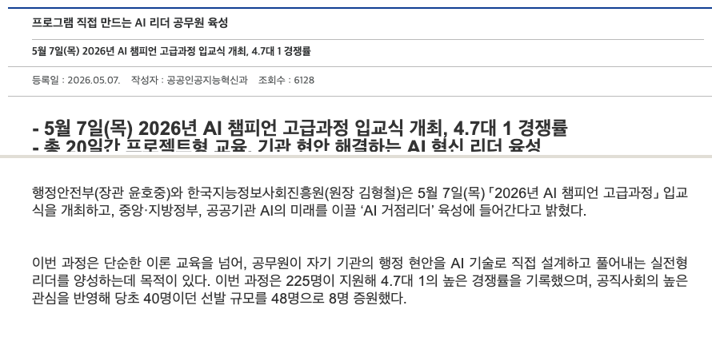
동호회 출범 뒤 바로 도전
전문인재 과정 합격
사무관·서기관·공공기관·공기업, 쌉고수 다수
동호회를 만들고 4월에 테스트와 면접을 거쳐 4.7대 1 경쟁률의 행정안전부 AI 챔피언 고급과정, 블랙 등급에 합격. 공식 보도자료 기준 225명 지원, 48명 선발, 총 20일 프로젝트형 교육.
과정에는 사무관·서기관, 공공기관·공기업 구성원도 있고 개인 체감으로 전산직이 약 70%. 기술적으로 이미 깊은 사람들이 많아 단순히 AI 도구 몇 개를 안다는 수준으로는 차별화가 어려운 환경.
WHAT I DID WELL · AI CHAMPION
말한 기능보다 실제 사용 장면을 먼저 봄
donawa-gecko-price.vercel.app
왜 필요한지, 무엇이 달라졌는지 설득
쌉고수 사이에서 만든 결과
유저가 실제로 원하는 장면을 찾았고, 그 결과물인 도나와를 실제 서비스로 구현함. 화면의 링크를 누르면 Vercel 배포본을 바로 열 수 있음.
왜 필요한지 발표하고 설득한 역량까지 더해 프로젝트 발표 2회 연속 TOP 3라는 결과로 이어짐.
GYEONGGI EXCHANGE · NEXT CONNECTION
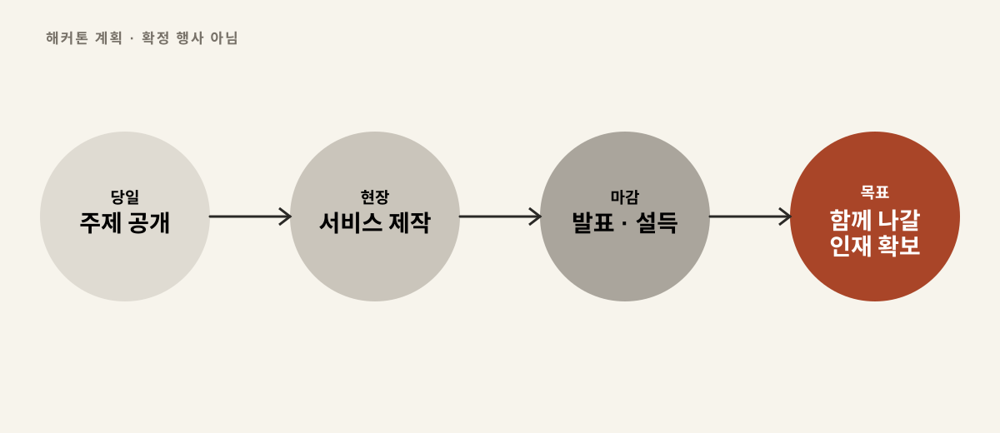
성과를 발표한 뒤 다른 AI 동호회와 경기도 인공지능 담당자와 교류함. 이후 경기도청 강의 요청 기회와, 사무관리비로 AI 구독료를 운영한 실제 사례를 확보.
다음 구상은 경기도 AI 동호회들이 당일 주제를 받고 현장에서 개발과 발표까지 진행하는 해커톤. 아직 확정 행사가 아니라 앞으로 협의할 계획이며, 동호회 안에서 함께 나갈 동료를 만드는 것이 목표.
PORTFOLIO · 상반기 AI 도입 사례 · 6건
찾기
모으기
정리
답하기
근거 찾기
안내
상반기 AI 도입 사례 여섯 건을 한 문장씩 먼저 제시. Gemini 계획은 도입 사례가 아니라 별도의 공동구독 운영 구간에서 설명.
CASE 01 · 국장님 일반현황 리더기 · 최초 요청
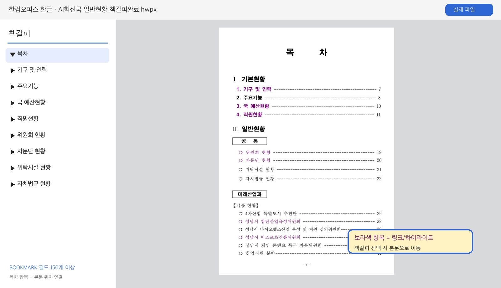
이 단계의 목표는 모바일이 아니라, 한글 문서 안에서 빠르게 찾아가는 기능
국장님의 첫 요청은 한글 일반현황의 목차에서 원하는 항목을 누르면 해당 현황으로 바로 이동하고, 연결된 제목은 눈에 띄게 하이라이트해 달라는 것. 그래서 처음에는 요청을 그대로 한글 문서 안에서 해결했다.
오른쪽이 가상 예시가 아니라 실제 최종검수 HWPX의 목차와 BOOKMARK 구조를 바탕으로 재현한 화면이다. 목차 항목에 하이퍼링크를 넣고 본문의 해당 제목 위치에는 책갈피 필드를 연결했다. 이 단계에서는 아직 모바일 사용 장면까지 보지 못했다.
CASE 01 · 처음 잘못 잡았던 해결 방향
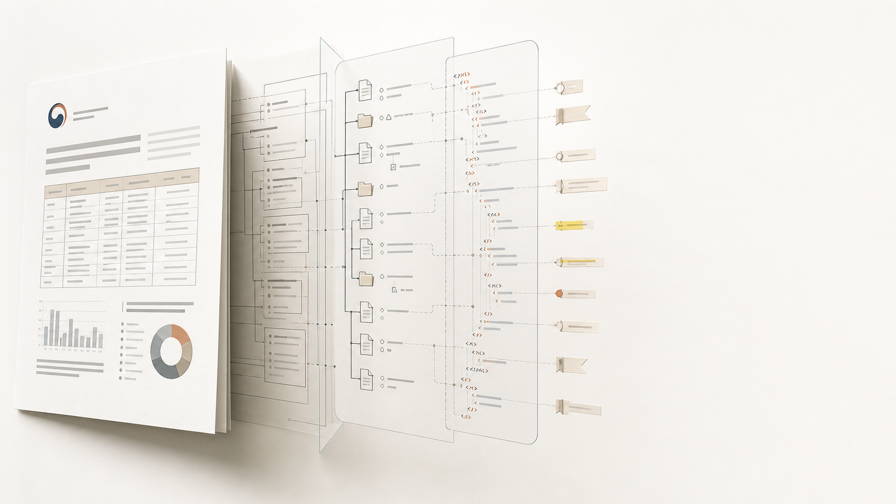
이때는 HWPX 내부까지 뜯어 해결하면 끝이라고 생각
1분처음에는 HWPX 압축을 풀어 section0.xml 안의 제목 run을 찾고 책갈피 control을 삽입. 기존 1개였던 책갈피를 6개로 늘리고 하이라이트 문자속성까지 분석.
쉽지 않은 기술 작업이었지만 실제로 동작. 이 시점에는 요청받은 기능을 구현했으니 일이 끝났다고 생각했고, 아직 파일 형식과 모바일 사용방식의 차이는 보지 못한 상태.
CASE 01 · 첫 번째 방향 전환
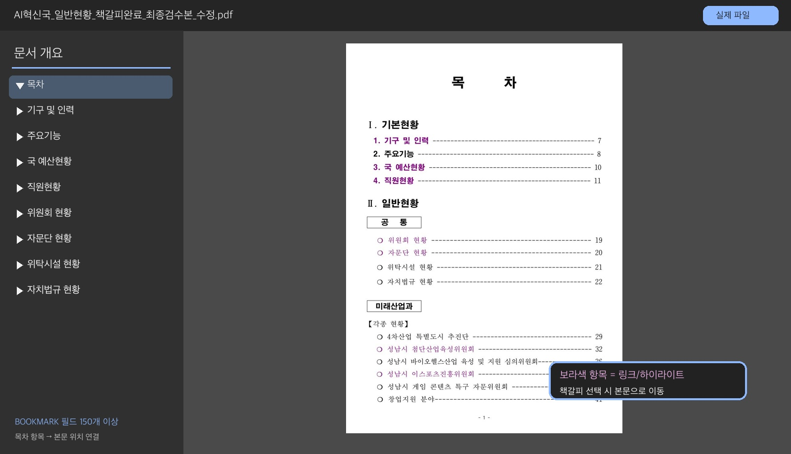
한글 버전을 하루 만에 만들어 보여드리자 “이거 PDF로는 안 되나?”라는 요청이 바로 이어졌다. 두 시간 정도 더 써서 184쪽 일반현황을 PDF로 변환하고 문서 개요와 목차 링크가 들어간 결과를 만들었다.
오른쪽 화면은 실제 최종검수 PDF의 문서 개요와 하이라이트된 목차를 바탕으로 재현했다. PDF 파일로 만들고 링크도 넣었으니 해결됐다고 생각했지만, 이 성공 기준도 여전히 ‘파일이 열린다’에 머물러 있었다. 다음 피드백에서 모바일 편의가 진짜 요구였다는 걸 알게 된다.
CASE 01 · 진짜 요구를 발견한 순간
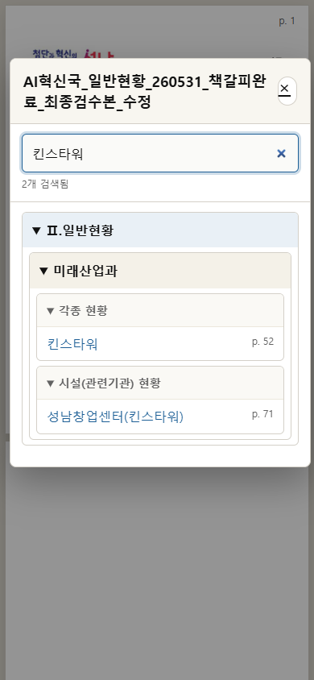
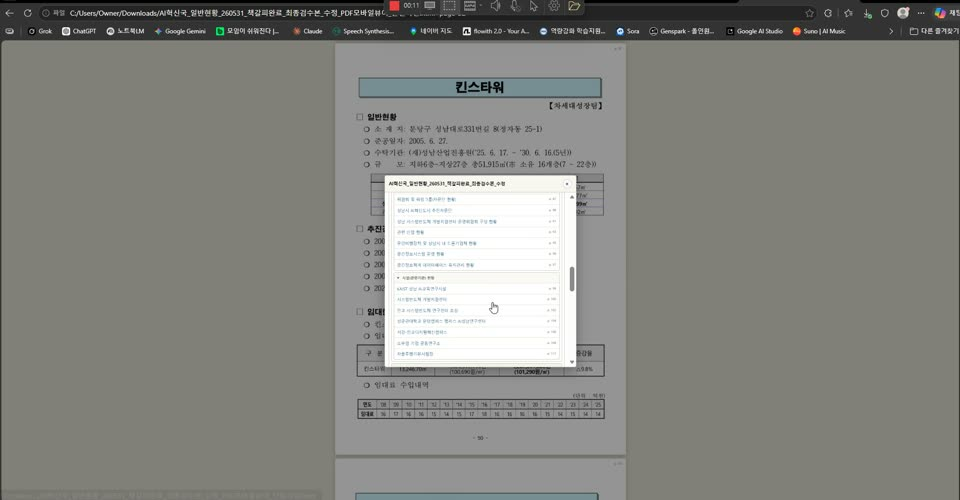
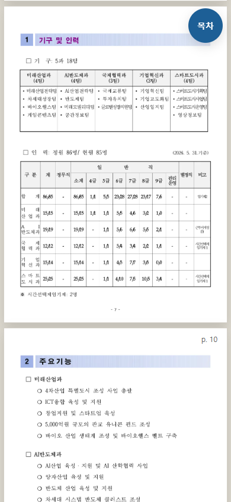
아, 국장님이 원한 건 ‘책갈피가 있는 파일’이 아니라
‘폰에서 국 현황자료를 빨리 찾는 구조’였구나
PDF까지 만들고 휴대전화에 넣었는데 “잘 안 된다”는 피드백이 다시 왔다. 이때서야 처음 두 번의 답이 모두 기능 중심이었다는 걸 알았다. 한글 책갈피도 만들었고 PDF도 만들었지만, 국장님이 실제로 하려는 행동을 보지 못했다.
진짜 요구는 회의나 이동 중 휴대전화로 긴 현황자료를 열고, 목차에서 항목을 찾고, 바로 그 페이지로 가는 것이었다. 이 판단 이후 한글→책갈피→하이라이트 과정은 전부 삭제하고 PDF를 바로 입력으로 받는 구조로 바꿨다.
CASE 01 · MOBILE-FIRST HTML
모바일에서 빨리 찾는 것이 목표로 바뀐 뒤 PDF를 그대로 스크롤하게 두지 않았다. 390픽셀 화면에서도 누르기 쉬운 큰 목차 버튼을 두고, 버튼을 열면 대분류·부서·항목을 접어서 보거나 제목을 검색하도록 했다. 예를 들어 ‘킨스타워’를 찾으면 결과 2건이 뜨고, 항목을 누르면 목차가 닫히면서 해당 PDF 페이지로 이동한다.
배포 형식은 HTML. PDF 페이지와 목차·검색 규칙을 한 파일에 묶으면 휴대전화 브라우저에서 열 수 있고, PC에서는 바탕화면 바로가기를 만들어 더블클릭할 수 있다. 국장님이 CLI나 별도 프로그램을 배우지 않아도 되는 사용 경험을 우선했다.
CASE 01 · SECURITY & DELIVERY DECISION
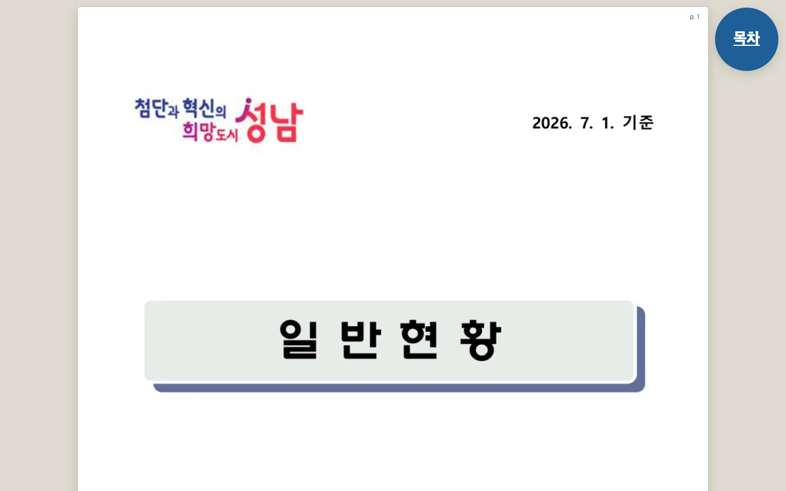
행정문서 외부 전송·로그인·CLI 부담
제목 판정과 변환 규칙을 코드로 고정
PDF 선택 → 로컬 룰베이스 → 단일 HTML
외부 업로드 없이 폰·PC에서 열람
HTML로 배포하려고 보니 다음 문제는 보안이었다. 매번 AI에 현황자료를 넣으면 보기 좋게 만들 수는 있지만 성남시 행정문서를 외부 AI가 읽게 된다. 국장님이 프롬프트나 CLI를 직접 써야 하면 편의를 만들려다 오히려 시간이 더 든다.
그래서 목표를 바꿨다. AI는 제목 규칙과 변환 프로그램을 만드는 동안만 사용하고, 실제 운영에는 AI가 들어가지 않게 한다. 사용자는 PDF 하나를 고르고, 로컬 룰베이스가 목차가 있는 단일 HTML을 생성한다. ‘AI로 만든 AI 없는 도구’가 보안과 배포를 동시에 해결하는 결론이었다.
CASE 01 · 제목 규칙을 만든 실제 방식
일단 PDF를 넣고 목차 생성
누락되는 제목의 공통점 확인
본문·표·머리말 오인 규칙 제거
지적을 코드 규칙으로 누적
PDF 내장 북마크 → 인쇄 목차 → 본문 제목 패턴
처음부터 완성된 제목 판정 규칙이 있었던 것이 아님. 일단 문서를 넣어 목차를 만들고 보여드린 뒤 “왜 저건 제목에 안 들어가?”, “왜 이게 제목으로 들어가?”라는 지적을 받음.
누락된 제목은 공통 형태를 찾아 허용 규칙으로 추가하고, 본문·표·머리말을 잘못 잡은 경우는 제외 규칙으로 추가. 다음 부서 문서에 다시 돌리며 엥간한 현황자료라면 목차를 만드는 수준까지 규칙을 누적.
CASE 01 · 현재 상태와 배포 계획
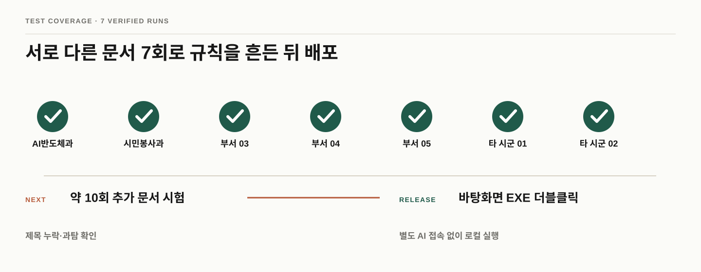
현재 5개 부서 자료와 타 시군 자료까지 포함해 일곱 차례 테스트. AI반도체과처럼 긴 문서, 시민봉사과처럼 다른 구조, 광양시청처럼 타 시군 양식을 함께 확인.
아직 전면 배포 단계는 아님. 약 열 차례를 더 돌려 제목 누락과 과탐을 확인한 뒤, 바탕화면에 옮겨 더블클릭하는 EXE로 배포할 계획.
CASE 01 · 실제 배포 파일을 사용하면
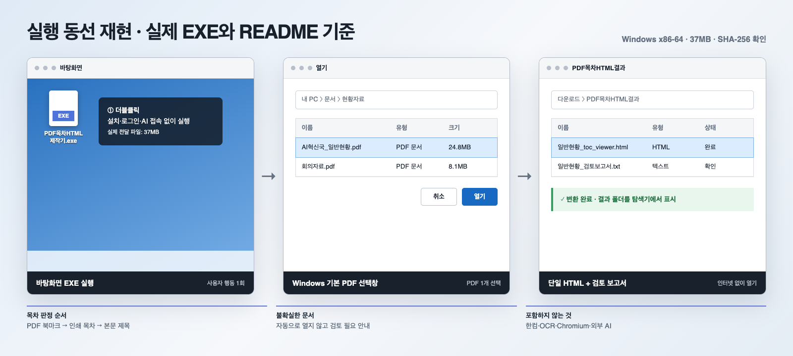
말로만 EXE라고 하면 개발자용 검은 창을 떠올릴 수 있다. 실제 전달 파일은 37MB Windows 실행파일이다. 바탕화면에 옮긴 뒤 더블클릭하면 Windows 기본 파일 선택창이 뜨고, 사용자는 PDF 하나만 고른다.
처리가 끝나면 브라우저를 자동으로 띄우는 대신 다운로드의 PDF목차HTML결과 폴더를 탐색기에서 보여준다. 그 안에 단일 HTML과 검토 보고서가 생긴다. 왼쪽부터 실행, 선택, 결과의 실제 동작을 README와 패키지 기준으로 재현한 화면이다.
CASE 02 · 성남 SNS 취합기 제작과정
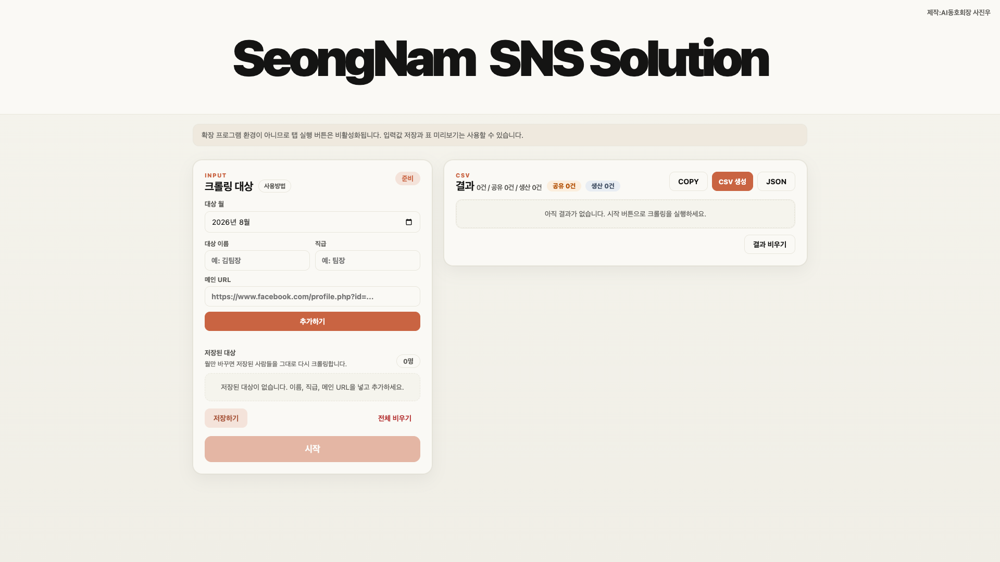
기획·개발·실무가 같이 만든 소규모 행정혁신, 이제 공식 공문에도 반영
1분 30초이 사례가 내가 생각하는 이상적인 동호회 구조. 권혁 주사가 현장에서 반복되는 SNS 취합 문제를 아이디어로 제안. 내가 브라우저 확장과 분류 규칙을 개발. 실제 담당자인 김나래 주사가 계속 예외 게시물을 보내며 피드백.
기획자·개발자·실무자가 따로 끝나는 것이 아니라 결과가 맞을 때까지 왕복. 결국 자동취합기가 매뉴얼과 함께 전 부서 공문에 반영. 큰 정보화사업이 아니라 작은 협업으로 만든 행정혁신.
CASE 02 · 자동화 전 원래 업무
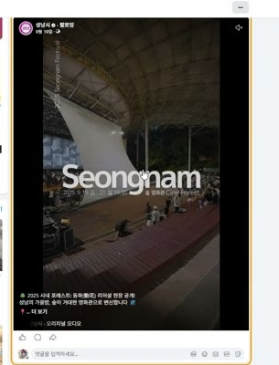
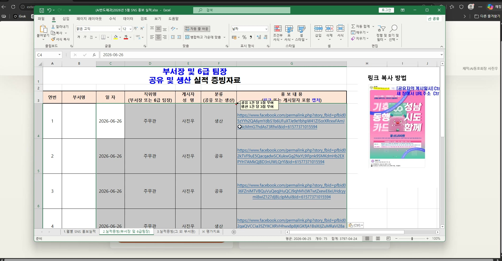
직원별 프로필을 열고 게시물을 하나씩 확인
직접 생산 · 단순 공유 · 실적 제외를 사람이 구분
날짜 · 직급 · 게시자 · 분류 · 게시물 URL 확인
한 줄씩 옮긴 뒤 다시 원문과 대조
복사보다 어려운 건, 애매한 게시물을 매번 같은 기준으로 판정하는 일
1분자동화 전에는 직원별 Facebook 프로필을 열고 취합할 월까지 내려간 뒤, 게시물을 하나씩 보며 직접 생산인지 공유인지, 실적에서 제외할 것인지 판단해야 했다. 그다음 날짜, 직급, 게시자, 분류, 게시물 URL을 실적 Excel에 한 줄씩 옮기고 누락과 중복을 다시 확인했다.
복사 자체보다 어려운 것은 같은 기준을 계속 유지하는 일이었다. 공유하면서 한두 글자를 적은 글, 동영상과 기사, 태그 글, 생일 글처럼 애매한 게시물이 계속 나왔다. 나는 처음에 생산과 공유만 나누면 끝이라고 생각했지만, 실제 업무는 게시물마다 판단 근거가 필요한 구조였다.
CASE 02 · 가장 핵심적인 로직
공유 게시물에 흐릿한 회색 테두리 존재
테두리만 보면 일반 UI까지 공유로 오인
코드를 뜯어보니 테두리 네 면에 특정 값 존재
네 면의 값이 맞는 프레임만 공유 후보로 판정
회색 테두리를 단서로 잡았지만 색이나 선 하나만 보면 엥간한 카드 경계를 전부 공유로 오인. 여기서 반도체과 청년인턴 최왕 씨가 화면 코드를 뜯어보자는 아이디어를 냄.
실제 DOM과 계산된 스타일을 보니 위·오른쪽·아래·왼쪽 네 면에 특정 width·color·radius 조합이 존재. 네 면 값이 맞는 프레임만 공유 후보로 보고, 이후 동영상·짧은 문구·태그·생일 같은 예외는 별도 규칙으로 누적.
CASE 02 · 가장 핵심적인 단서
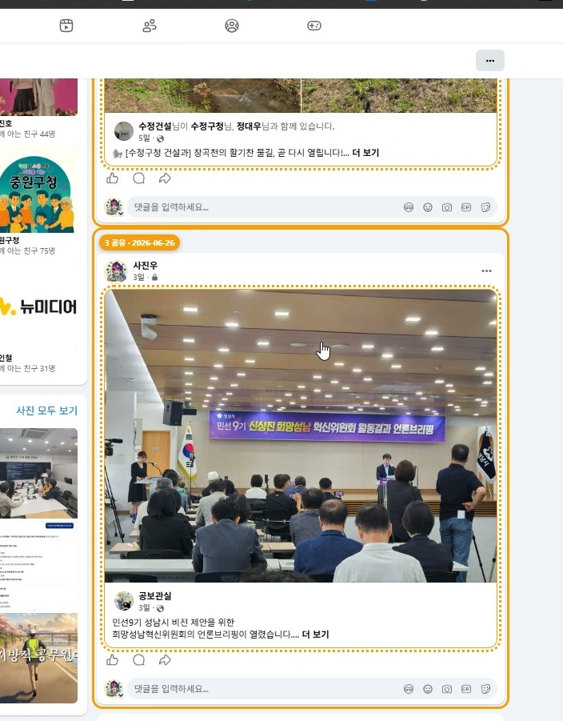
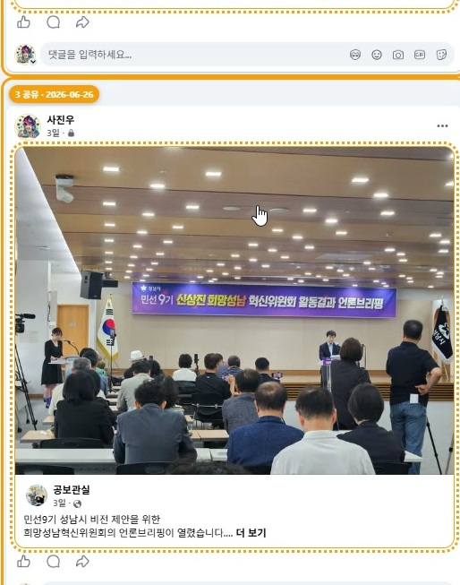
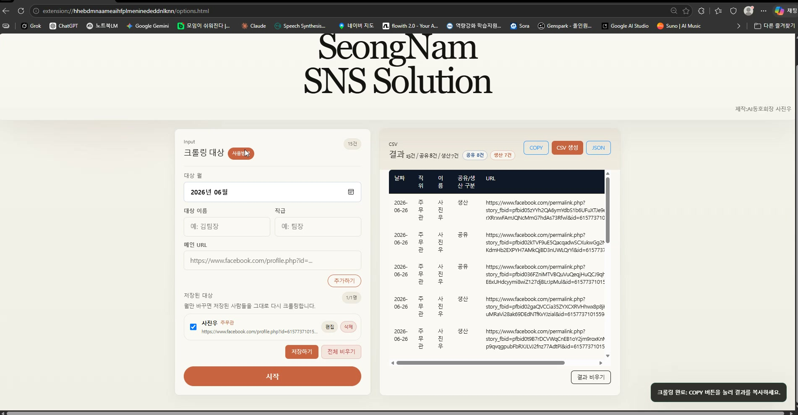
회색 선 전체가 아니라, 최왕 청년인턴이 찾아낸 네 면의 특정 값으로 공유 프레임만 판정
1분가운데 두 화면은 시연영상에서 실제 공유 게시물을 잘라낸 것이다. 공유된 본문을 감싸는 흐릿한 회색 프레임을 첫 단서로 잡았다.
문제는 회색 선을 넓게 잡으면 카드, 댓글, 일반 UI까지 전부 공유로 오인한다는 점이었다. 최왕 청년인턴이 브라우저 코드에서 네 면의 특정 값을 확인했고, 오른쪽처럼 수집기에 적용한 뒤 예외 사례를 별도 규칙으로 누적했다.
CASE 02 · OPERATING RULES
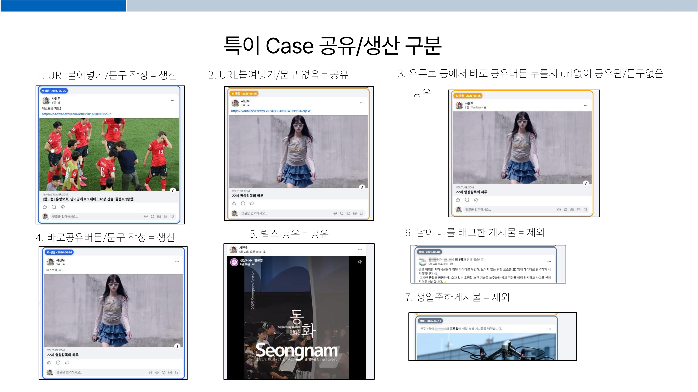
CASE 02 · 실무 피드백으로 늘어난 예외
김나래 주사가 준 피드백은 ‘정답을 알려주는 문서’가 아니라 실제 Facebook 게시물이었다. 나는 그 사례를 다시 수집기에 넣고, 왜 잘못 잡히는지 확인하고, 다음 번에는 같은 형태가 자동으로 분류되도록 규칙을 추가했다.
그래서 매뉴얼 마지막 쪽에는 글을 쓰고 URL을 붙인 경우, URL만 붙인 경우, 외부 공유버튼을 누른 경우, 릴스, 태그, 생일 글까지 일곱 가지가 실제 화면으로 고정됐다. 이 표가 코드보다 먼저 실무 기준이 됐다.
CASE 02 · DECISION ORDER
CASE 02 · 6-STEP WORKFLOW
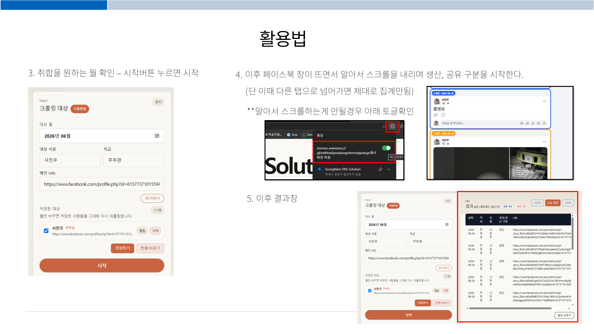
CASE 02 · OFFICIAL ADOPTION
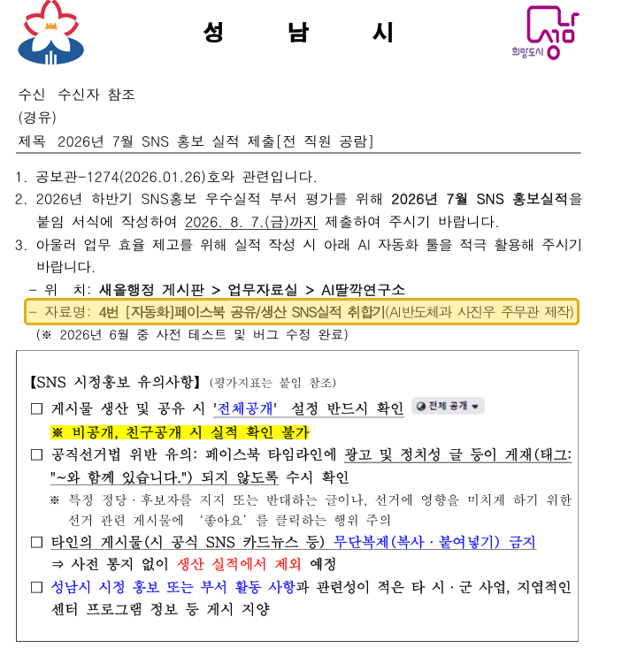
CASE 02 · FIELD FEEDBACK · ANONYMIZED
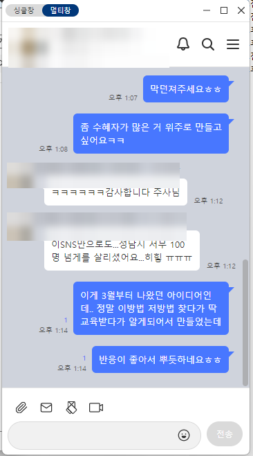
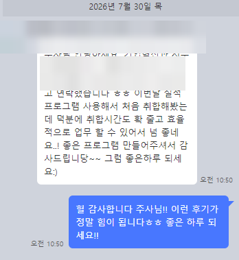
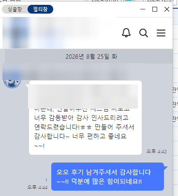
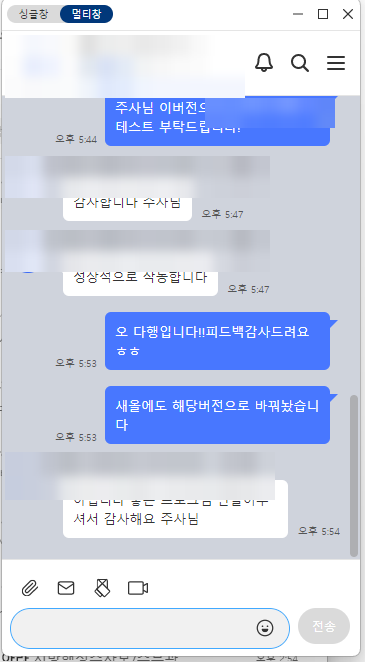
이름·프로필·소속·직급·본문 속 실명 블러 처리 · 후기 내용은 원문 유지
1분공문에 들어갔다는 사실 다음에 실제 사용 후기를 놓았다. 첫 번째는 많은 수혜자가 있는 업무에 적용했고 반응이 좋아 뿌듯하다는 내용. 두 번째는 SNS 실적 취합 기간이 줄고 업무가 효율적으로 바뀌었다는 내용.
세 번째는 직접 써보니 간편하고 좋다는 후기, 네 번째는 정상 작동을 확인하고 새해 버전으로 교체했으며 좋은 프로그램을 만들어줘 고맙다는 후기. 발표 화면에는 이름, 프로필, 소속, 직급, 본문 속 실명을 모두 블러 처리하고 실제 후기 문장만 남겼다.
CASE 03 · 환경정책과 취합기 · ACTUAL FILE
단순히 ‘엑셀을 나눈다’가 아니라, 긴 조달 원본에서 필요한 열과 담당 부서를 복원해 제출 서식으로 다시 조립
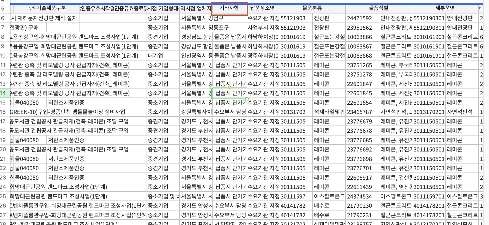
납품 시 단가 안내 · 실수요부서 담당자·전화번호: 시설공사과 ○○○, 031-729-****
기타 레미콘 품질보증·시험성적서 조건 · 공사현장 주소 · 납품기한 변경 이력
환경정책과 취합기를 ‘간단한 엑셀 자동화’라고만 말하면 난이도가 잘 전달되지 않는다. 실제 원본 testfile.xlsx는 2026년 1월부터 4월까지 계약·납품요구 1,650건, A열부터 AK열까지 37개 열로 구성돼 있다.
화면의 V14 `기타사항` 한 셀에는 납품 시 단가 안내, 시설공사과 담당자와 전화번호, 레미콘 품질보증·시험성적서 조건, 공사현장 주소, 2025년과 2026년 납품기한 변경 이력이 한꺼번에 들어 있다. 프로그램은 이 장문 전체를 옮기는 것이 아니라 `실수요부서 담당자, 전화번호:` 뒤에서 `시설공사과`를 찾아 부서를 복원한다.
실무자가 원하는 결과는 이 거대한 표 자체가 아니라 기준일자, 녹색인증 여부, 기타사항 속 실수요부서, 물품명, 증감수량과 공급금액을 골라 부서별·분기별 제출 양식으로 다시 만드는 것. 발표용 화면은 실제 실행 장면을 쓰되 담당자 이름과 전화번호는 마스킹했다.
CASE 03 · SOURCE → RULE → OUTPUT
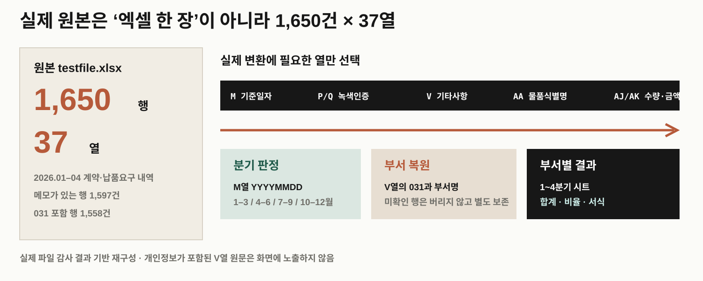
원본에서 실제 변환에 쓰는 축을 먼저 고정했다. M열 기준일자로 분기를 정하고, P·Q열의 녹색기술제품 구분과 인증유형을 확인한다. V열 기타사항에서 실수요부서 단서를 찾고, AA열 물품식별명, AJ열 증감수량, AK열 공급증감금액을 결과 양식의 구매내역으로 연결한다.
실제 원본 1,650행 가운데 기타사항이 있는 행은 1,597건, 031 전화번호가 포함된 행은 1,558건, 녹색인증 관련 값이 있는 행은 754건. 이 숫자 차이 때문에 단순 필터 한 번으로 끝나지 않고, ‘어떤 행을 살리고 어떤 행을 검토로 보낼지’ 규칙이 필요했다.
CASE 03 · DEPARTMENT PARSER
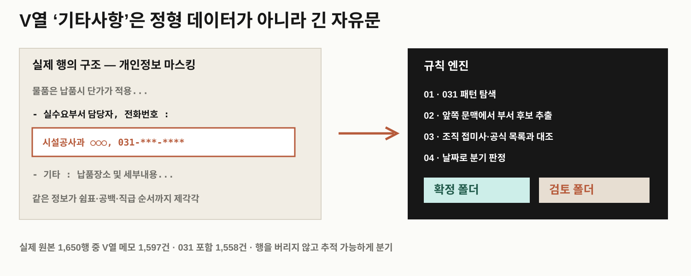
V열은 ‘부서명’처럼 정해진 칸이 아니다. 계약 안내, 납품기한, 검사 조건, 담당자와 전화번호가 한 셀에 길게 붙어 있고 쉼표·공백·직급 순서도 제각각이다. 일부 셀은 수백 자에 이른다.
그래서 먼저 031 전화번호를 찾고, 그 앞쪽 문맥에서 과·팀·센터 같은 조직 접미사가 붙은 후보를 추출한다. 공식 조직명과 맞으면 확정 폴더로, 불명확하면 행을 버리지 않고 검토 폴더로 보낸다. 개인정보가 포함된 원문은 발표 화면에서 이름과 전화번호를 마스킹했다.
CASE 03 · ACTUAL OUTPUT
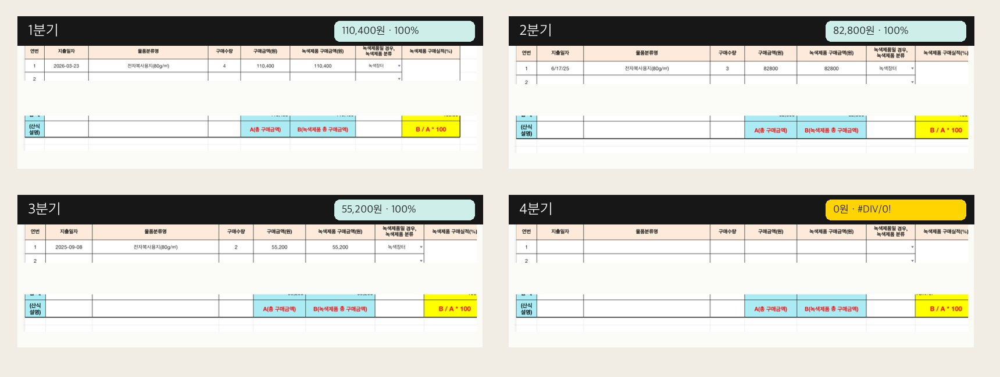
오른쪽의 예시가 아니라 실제 `15. AI반도체과.xlsx` 네 개 시트를 한 화면에 놓은 것. 1분기 복사용지 4개 110,400원, 2분기 3개 82,800원, 3분기 2개 55,200원이 들어가고 각 분기 녹색제품 구매실적은 100%로 계산된다. 1~3분기 누계는 248,400원.
부서명, 지출일자, 물품분류명, 수량, 총 구매금액, 녹색제품 금액, 녹색제품 분류와 실적 비율이 기존 제출 양식의 병합·테두리·색상 안에 유지된다. 즉 데이터 분리와 서식 재현을 한 번에 처리한 결과다.
CASE 03 · ACTUAL UI & OUTPUT
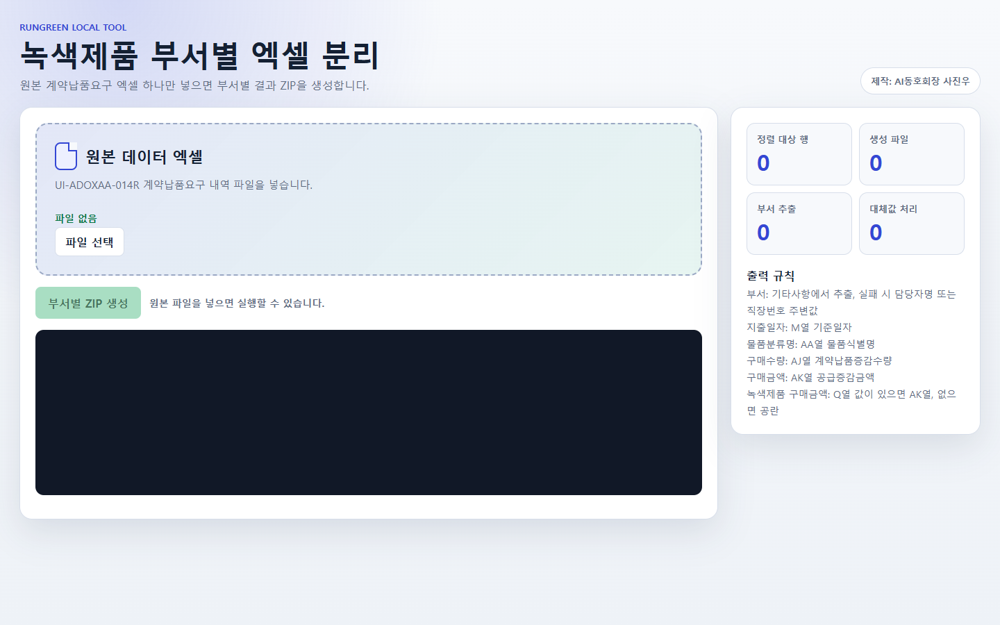
127.0.0.1 로컬 처리 · 외부 서버 업로드 없음
담당자가 기억할 사용법은 네 단계뿐. 압축을 풀고 RunGreen.bat를 실행한 뒤 원본 testfile.xlsx 하나를 선택하면 된다. 도구가 브라우저 메모리에서 1,650행을 읽고 녹색제품 여부, 부서, 분기, 금액을 판정해 부서별 파일과 요약을 만든다.
화면에는 선택 파일명, 추출 행 수, 생성 파일 수, 확인이 필요한 행과 처리 로그를 남긴다. 원본은 127.0.0.1 로컬에서 처리해 외부 AI나 서버에 업로드하지 않는 구조다.
CASE 03 · 실제 시연
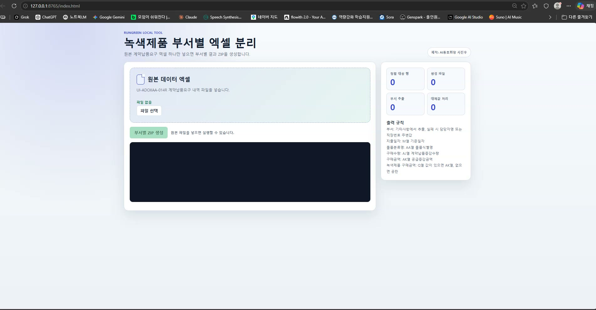
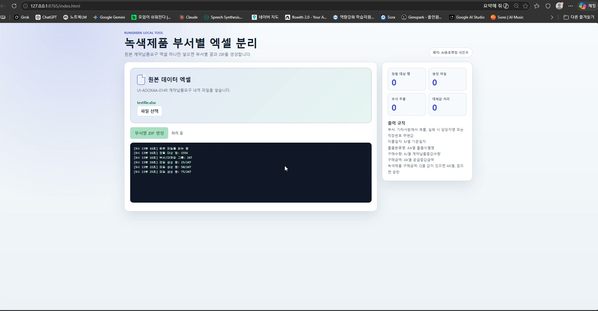
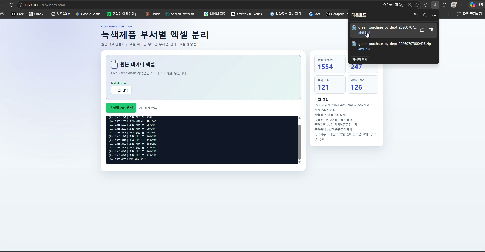
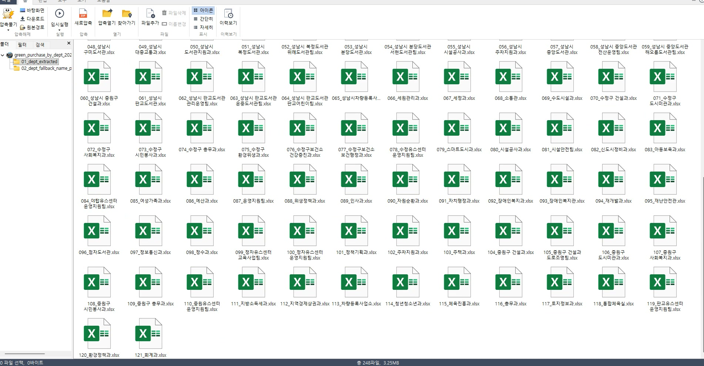
시연영상은 발표 중 재생 오류를 피하기 위해 시작·처리·집계·완료 장면으로 캡처했다. 원본 하나를 선택하면 1,650행을 읽고, 031과 부서명, 기준일자, 녹색인증 값을 판정한 뒤 정상과 확인 필요 건수를 보여준다.
마지막 장면에서 여러 부서별 엑셀이 생성된다. AI가 매번 엑셀을 읽는 방식이 아니라, AI와 대화해 만든 규칙이 로컬 도구 안에서 반복 실행되는 구조다.
CASE 04 · 고유가 지원금 성남플랫폼 챗봇
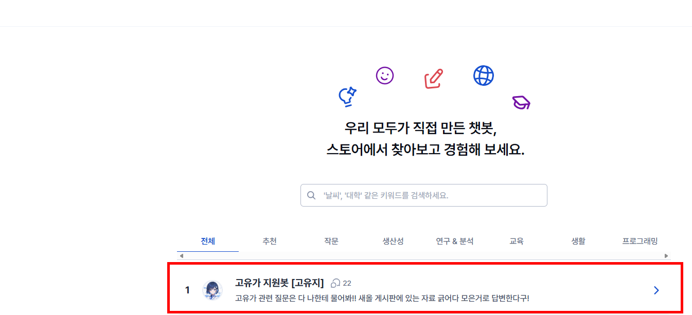
반복되는 대상·절차·기준 문의
내부 게시판에 축적된 기존 안내자료 활용
질문마다 게시판 자료를 찾아 모아 설명
성남AI플랫폼 스토어에 등록한 고유가 지원봇은 현재 1,700회 이상 사용됐다. 고유가 지원 관련 질문을 받으면 새올 게시판에 이미 올라온 자료를 찾아 모아 답하도록 만들었다.
오른쪽 증빙은 초기 운영 당시 569회 화면이다. 이후 사용량이 1,700회를 넘었다.
CASE 05 · Korean Law MCP 배포
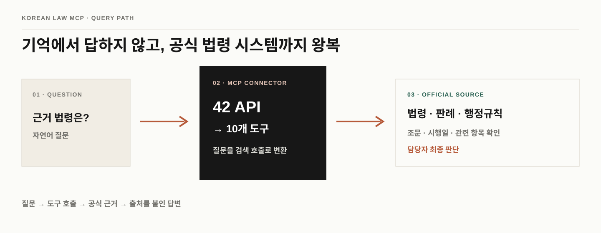
MCP = AI가 외부 도구를 정해진 형식으로 호출하는 연결 규격
※ 법적 판단의 최종 책임: 담당자
30초위험: 그럴듯한 기억 기반 법령 답변. 대응: MCP로 법령 검색 도구 호출 → 조문·시행일 확인 → 담당자 최종 판단. 다음 장에서 실제 공개 프로젝트와 ChatGPT 연결 사례를 확인.
CASE 05 · RESEARCHED CASE · CHATGPT CONNECTOR
법령 · 판례 · 행정규칙 · 자치법규 · 조약 · 해석례
조문 실존·내용 검증, 현행/과거 법령 구분, 판례 생사 확인
“개인정보보호법 위반 시 제재 근거와 관련 판례를 찾아줘”
조회·검증을 보조하는 도구 · 법적 효력이 필요한 판단은 국가법령정보센터 원문과 담당자가 최종 확인
1분2026년 8월 29일 공개 저장소 기준으로 Korean Law MCP는 법제처의 42개 API를 AI가 선택하기 쉬운 10개 도구로 묶는다. 법령만 찾는 검색기가 아니라 판례·행정규칙·자치법규·조약·해석례를 함께 다루고, 인용한 조문이 실제 존재하는지와 내용이 맞는지도 검사한다.
동호회 기록의 핵심은 이 서버를 브라우저 ChatGPT에서도 쓸 수 있게 원격 MCP 주소로 연결했다는 점. 질문하면 AI가 기억으로 법령명을 지어내는 대신 검색 도구를 호출해 조문과 시행일을 받아온다. 단, 도구가 가공·요약한 결과이므로 법적 판단은 국가법령정보센터 원문과 담당자가 최종 확인.
CASE 06 · 신규회원 모집 프로세스 자동화
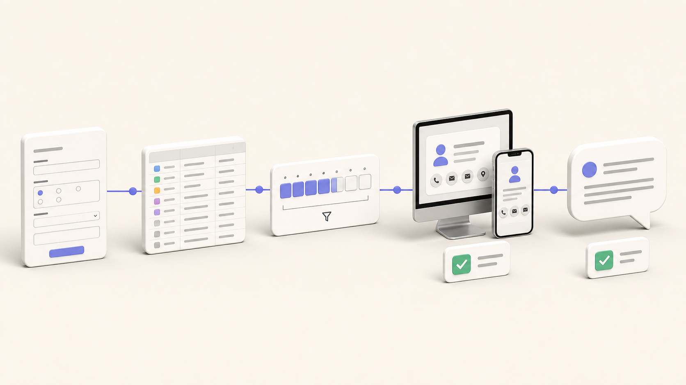
아이디어 출발: Mac과 iPhone의 연락처가 연동되고, 내 컴퓨터에는 에이전트가 상주
1분최근 신규회원들이 받은 안내문자는 내가 한 명씩 주소록에 넣고 복사해 보낸 것이 아니라 AI 에이전트가 명단을 읽고 만든 자동화 흐름으로 발송.
다만 AI가 사람을 마음대로 판단하거나 아무 문자나 보낸다는 뜻은 아님. 네이버폼의 정해진 필드, 최근 7일 조건, 연락처 등록 형식, 고정된 안내문구를 순서대로 실행하도록 구조화.
CASE 06 · 자동화 아이디어가 생긴 순서
이 자동화는 거대한 시스템을 만들겠다는 계획에서 시작하지 않았다. 내 컴퓨터와 휴대전화가 모두 Apple 환경으로 맞춰지면서 iPhone 연락처가 Mac에서도 바로 보인다는 사실에서 시작했다.
그리고 Mac에는 파일을 읽고 앱을 다룰 수 있는 에이전트가 상주한다. 그렇다면 네이버폼 결과가 Google 표에 쌓인 뒤 최근 가입자만 골라 연락처에 넣고 같은 사람에게 문자를 보내는 과정까지 이어볼 수 있다고 생각했다.
CASE 06 · 5시간 동안 만든 실제 명령 구조
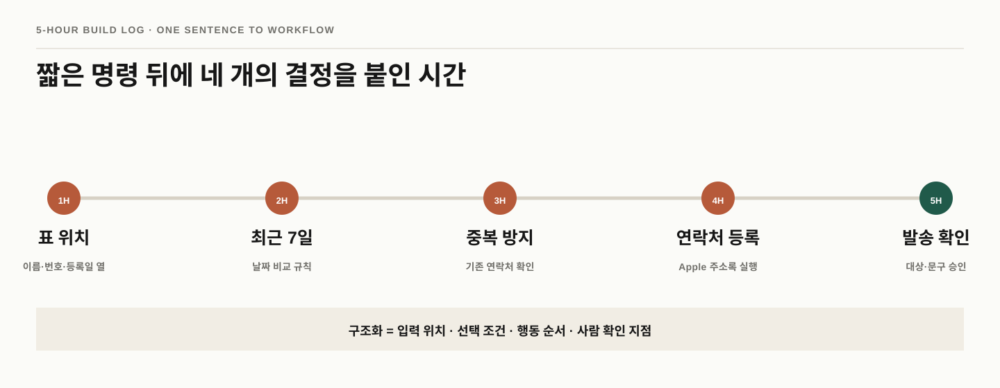
핵심은 멋진 프롬프트가 아니라 입력·조건·행동·확인의 구조화
1분겉으로는 “최근 일주일 동안 등록된 사람들을 내 연락처에 넣고 문자 보내줘” 한 문장. 실제로는 Google 표의 어느 열이 이름과 번호인지, 날짜를 어떻게 비교할지, 기존 연락처와 중복되면 어떻게 할지, 문자 대상과 문구를 언제 확인할지 정해야 했음.
이 과정을 만드는 데 약 다섯 시간. AI와 계속 대화하며 한 단계씩 오류를 고침. 여기서 얻은 결론은 멋진 프롬프트보다 입력 위치·선택 조건·행동 순서·사람 확인 지점을 구조화하는 것이 중요하다는 점.
PART 03 · CLI & AGENT TOOLS
채팅창에서 한 단계 더
폴더·명령·브라우저·결과 파일까지 연결
상반기 사례 설명을 마치고, 그 결과물을 실제로 만들 때 사용한 작업 방식으로 전환.
CLI를 개발자 전용 검은 화면으로 설명하지 않고, 버튼 대신 한 줄의 명령과 자연어로 컴퓨터에 작업을 맡기는 인터페이스로 소개. Claude Code·Codex·Antigravity는 화면이 다르지만 폴더를 읽고, 파일을 고치고, 명령을 실행하고, 결과를 검증하는 같은 에이전트 계열.
CLI 101 · COMMAND LINE INTERFACE
$ cd ~/Documents/일반현황
$ claude
› 이 폴더의 PDF를 모바일 목차형 HTML로 바꿔줘
● PDF 12개 확인
● 제목 규칙 적용
● index.html 생성
● 브라우저 검증 완료
작업 범위 지정
결과·조건 전달
읽기·수정·실행
오류·화면 검증
버튼을 하나씩 찾는 대신, 원하는 결과와 조건을 한 번에 전달
1분CLI는 Command Line Interface의 약자. 아이콘과 메뉴를 누르는 GUI와 달리, 명령을 글자로 입력하는 작업창. 중요한 것은 명령어 암기가 아니라 AI 에이전트가 이 통로로 현재 폴더의 파일과 프로그램을 직접 다룰 수 있다는 점.
예시 흐름은 작업 폴더로 이동 → Claude Code 실행 → 자연어로 결과와 조건 전달 → 파일 확인·변환·브라우저 검증. 실제 사용자는 모든 명령을 외우기보다 최종 결과와 금지 조건을 명확히 말하는 역할.
내부 행정자료는 접근 폴더와 외부 전송 여부를 먼저 확인. 로컬 파일을 다룬다는 사실과 모델이 내용을 처리할 수 있다는 사실은 별도 보안 판단 대상.
CLI TOOL LANDSCAPE · 공식 화면 비교

claude 실행코드베이스 읽기 · 여러 파일 수정 · 명령 실행 · Git · MCP
터미널·IDE·Desktop·Web에서 같은 에이전트 루프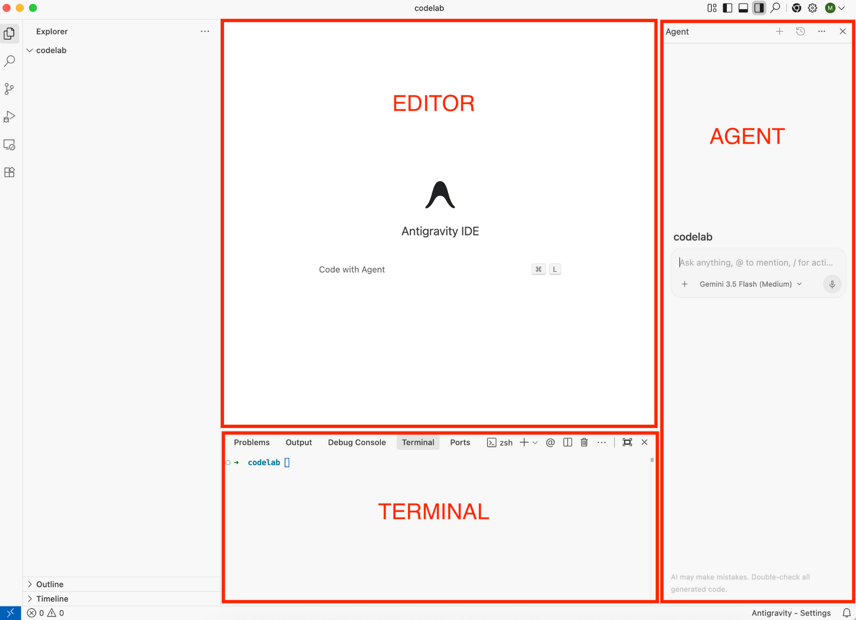
2.0 Desktop command center · CLI · IDE · SDK 제공
프로젝트·Local/Worktree·Artifacts·Browser 중심의 시각적 관리Claude Code는 터미널에서 claude를 실행하는 방식이 대표적. 프로젝트 전체를 읽고 여러 파일을 수정하며 명령·테스트·Git·MCP까지 연결. 현재는 IDE·Desktop·Web도 제공하지만, CLI의 빠른 조합과 자동화가 강점.
Google Antigravity는 2.0 기준 독립형 Desktop command center, CLI, IDE, SDK의 여러 표면 제공. Desktop은 여러 프로젝트와 로컬·워크트리 에이전트를 관리하고, IDE는 Editor·Agent·Terminal·Browser·Artifacts를 시각적으로 확인하는 구조.
선택 기준은 우열보다 사용 장면. 터미널에서 빠르게 한 작업을 끝내려면 Claude Code·Codex CLI, 여러 에이전트와 결과물을 화면에서 살피려면 Codex Desktop·Antigravity 계열이 이해하기 쉬운 선택.
NEXT CLUB SESSION · KORDOC
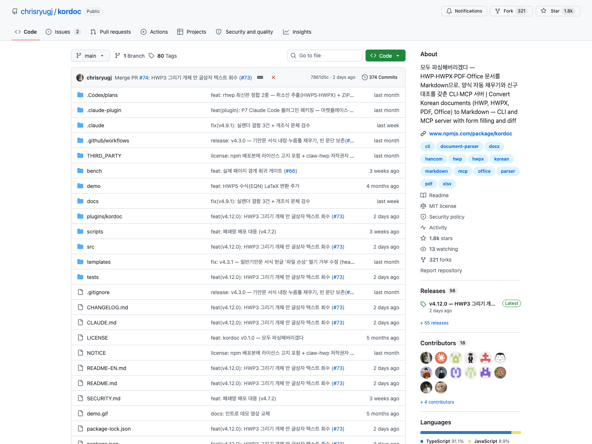
행정문서를 Markdown으로 변환
문서를 읽는 데서 끝나지 않는 작업 도구
Codex·Claude 같은 에이전트와 연결
류승인 주임의 실제 활용 설명 예정
이번 시간에는 Kordoc의 존재와 다음 시간 예고까지만 설명. Kordoc는 HWP·HWPX·PDF·Office 문서를 Markdown으로 바꾸고 양식 채우기, 신구대조, CLI·MCP 연결을 지원하는 공개 도구.
구체적인 사용법은 류승인 주임이 다음 동호회 시간에 설명할 예정. 바로 다음 장에서는 Kordoc를 업무 폴더 모니터링과 대시보드 구축에 연결한 활용 방향을 보여준다.
KORDOC 활용 · 업무 폴더 모니터링
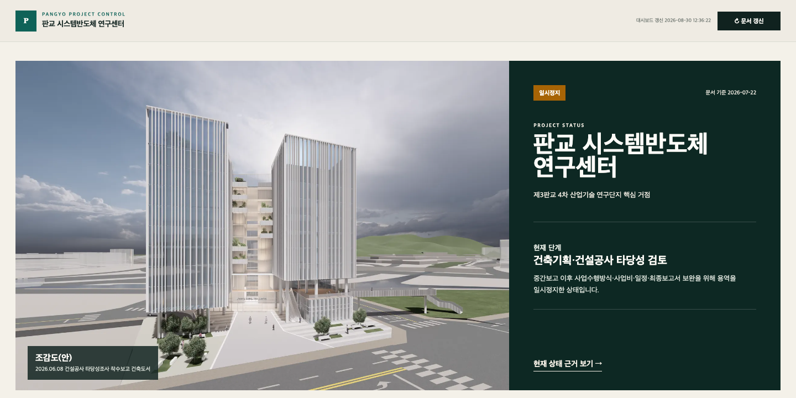
Kordoc로 업무 폴더를 계속 모니터링하고, HWP·HWPX·PDF 문서가 바뀌면 내용을 다시 읽어 대시보드에 반영하는 방식.
화면은 판교 시스템반도체 연구센터 문서를 기준으로 만든 실제 HTML 시제품. 문서 기준일, 사업 상태, 조감도, 현재 단계와 핵심지표를 한 화면에서 확인한다.
PRESENTATION WORKFLOW · KAKAO PLANNER
템플릿·콘셉트 선택
디자인 분석 → DESIGN.md
디자인 문서 + 대본·PDF
완성본 열고 추가 설정
서식 일괄수정
애니메이션·웹 발표본
디자인을 먼저 문서화하고, 내용은 나중에 적용하는 방식
2분 30초카카오 기획자 출신에게 배운 방식을 바탕으로 실제로 쓰는 순서. 레퍼런스 선택 → Claude로 DESIGN.md → Genspark에 디자인과 내용 동시 입력 → PowerPoint에서 추가 설정 → Claude·Codex로 일괄수정. 더 높은 완성도가 필요하면 HTML 발표본으로 확장.
중요한 점은 도구 이름이 아니라 디자인을 먼저 규칙으로 문서화하고, 발표할 내용을 별도 묶음으로 정리한 뒤 두 가지를 합치는 구조.
PRESENTATION FACTORY · STEP 01 · ACTUAL REFERENCE
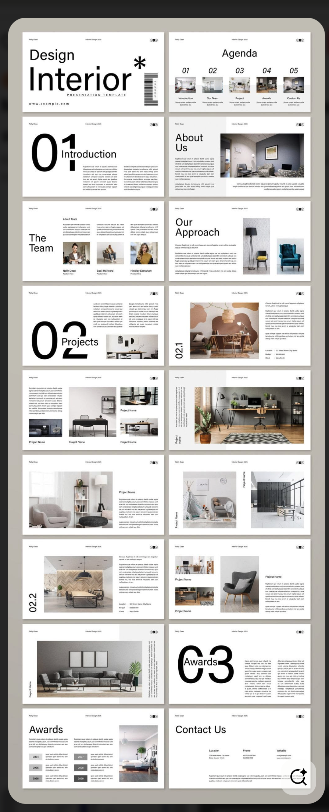
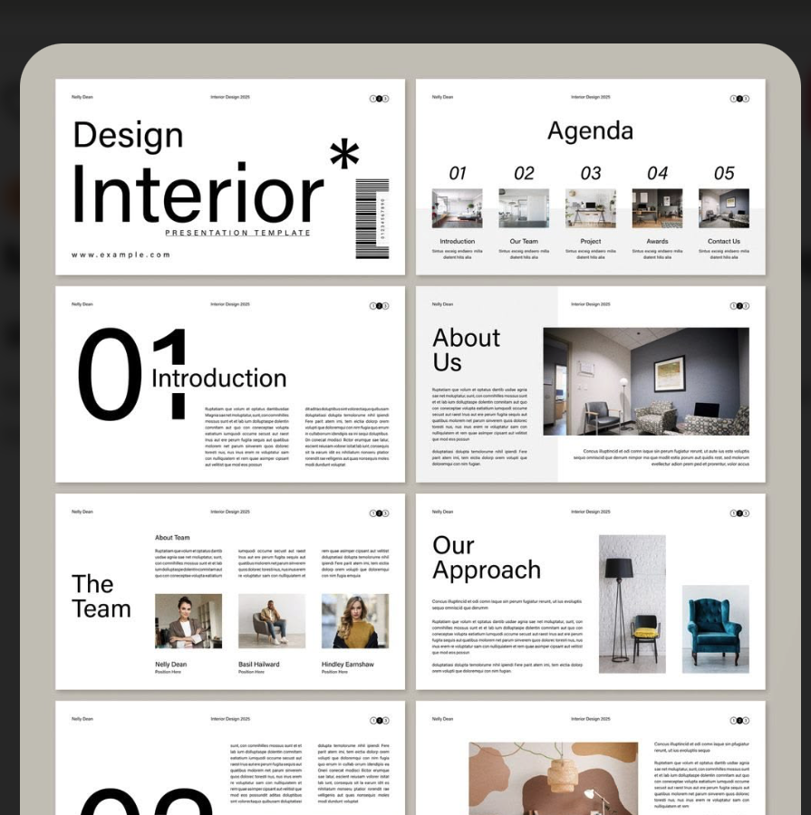
사용자가 실제로 선택한 Pinterest 인테리어 프레젠테이션 레퍼런스
1분이게 실제로 Pinterest에서 가져온 레퍼런스. Dribbble과 Pinterest에서 검색만 한 화면이 아니라, 최종적으로 고른 인테리어 발표 템플릿 한 묶음임. 표지 하나만 보고 고른 것이 아니라 표지, Agenda, 01·02·03 장 구분, About Us, Team, Project, Awards, Contact Us까지 전체 흐름을 봄.
여기서 그대로 베끼는 것은 사진이나 문구가 아님. 큰 장 번호를 배경처럼 쓰는 법, 흑백 타이포의 위계, 사진과 본문의 비율, 모든 장에 반복되는 헤더와 페이지 표식을 규칙으로 가져감. 다음 장에서 이 반복 요소를 Claude가 읽을 수 있는 디자인.md로 바꿈.
STEP 01 · Dribbble · Pinterest
행간·굵기·줄바꿈
이미지 비율·그리드
배경·본문·단일 액센트
슬라이드 간 호흡
한 장의 복제가 아니라 타이포·레이아웃·색·리듬의 공통 규칙을 추출. 아래 실제 레퍼런스에서 큰 장 번호, 흑백 타이포, 이미지 비율, 반복 헤더를 확인.
STEP 02 · Claude로 DESIGN.md 만들기
Claude에게 레퍼런스를 분석시켜 디자인 규칙을 Markdown으로 문서화 이 파일이 있어야 이후 도구가 바뀌어도 같은 디자인을 유지 가능.
PRESENTATION FACTORY · STEP 02 · ACTUAL CLAUDE ARTIFACT
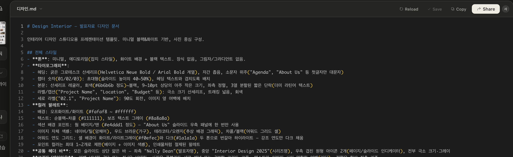
“이 발표자료를 디자인.md로 만들어줘” → 색·서체·여백·장 번호·사진 규칙을 다음 도구가 읽는 문서로 저장
1분이 화면이 Claude에서 실제로 만든 디자인.md. 앞에서 고른 Pinterest 인테리어 레퍼런스를 Claude에 넣고 ‘이 발표자료를 디자인.md로 만들어줘’라고 요청한 결과임. 상단부터 전체 스타일, 타이포그래피, 컬러 팔레트, 공통 헤더 바, 그리고 총 18슬라이드 구성을 정리함.
중요한 점은 ‘미니멀하게 만들어줘’ 같은 감상형 지시로 끝내지 않는 것. 큰 01/02/03 장 번호, 산세리프와 세리프의 역할, 웜 화이트 배경, 사진 배치, 반복 헤더 같은 요소를 글로 고정함. 이 파일과 발표 내용을 다음 단계인 Genspark에 같이 넣음.
PRESENTATION FACTORY · STEP 03 · ACTUAL RUN
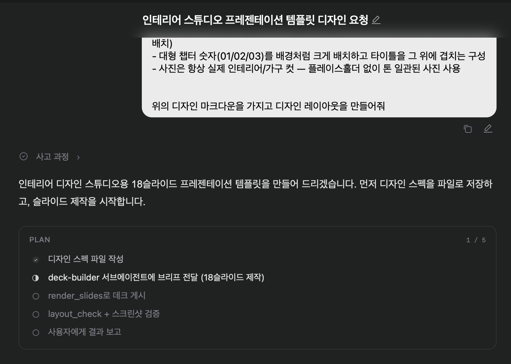
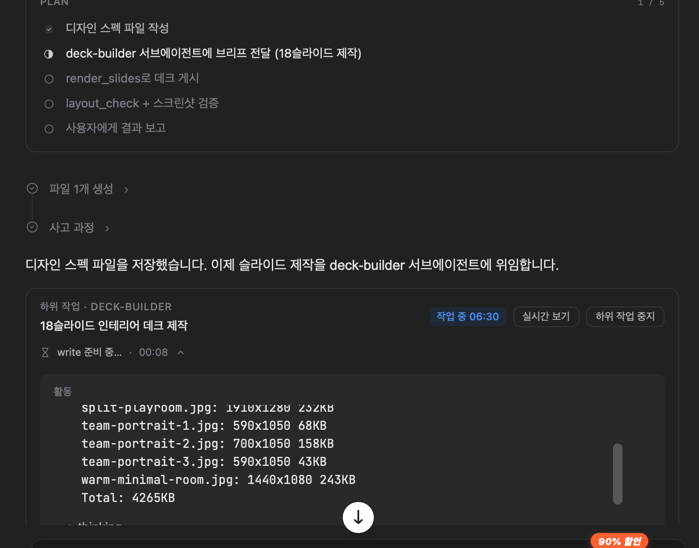
실제 작업 화면 · 2026.08.30 21:09 · 사용자 제공 캡처
1분이 화면이 지금 실제로 젠스파크에 돌리고 있는 장면. 디자인 마크다운만 넣는 것도 아니고 발표 내용만 넣는 것도 아님. DESIGN.md와 실제 발표 대본·텍스트를 함께 주고, 그 디자인 문법으로 내 내용을 배치한 PPTX를 만들게 함.
그다음 젠스파크가 18장짜리 deck-builder 하위 작업을 열어 제작을 넘김. 화면의 PLAN을 보면 디자인 스펙 작성 다음에 deck-builder 제작, render_slides 게시, layout_check와 스크린샷 검증, 결과 보고까지 이어짐. 즉 한 번에 결과만 뽑는 것이 아니라 설계·제작·렌더·검수 단계를 나눠 돌리는 방식.
PRESENTATION FACTORY · STEP 03 · Genspark 초안 · GENERATED DECK
Genspark 실제 작업 화면 · 2026.08.30 21:50 · 사용자 제공 캡처
1분앞 장의 PLAN만 있는 상태에서 한 단계 더 진행된 실제 화면. 왼쪽을 보면 젠스파크가 DLC 하반기 정기모임 내용을 18슬라이드 데크에 채우기 위해 먼저 발표 내용을 구조화한 파일을 만들고, deck-builder 하위 작업을 다시 시작함.
오른쪽에는 결과가 바로 보임. Pinterest에서 고른 인테리어 레퍼런스의 큰 장 번호, 흑백 타이포, 사진 배치가 유지되고, 18장 썸네일과 4번 About Us 편집 화면이 생성됨. 아직 작업 중인 화면이므로 완성본이라고 말하는 것이 아니라 디자인 계약이 실제 슬라이드 구조로 번역되는 단계로 설명.
PRESENTATION FACTORY · STEP 04 · GENSPARK CONTENT FILL
먼저 Genspark가 DESIGN.md를 바탕으로 이미지와 레이아웃이 들어간 디자인 장표를 만든다. 그다음 발표 대본이나 텍스트, PDF를 넣고 이 디자인에 해당 내용을 적용해 달라고 요청한다.
결과는 단순한 빈 템플릿이 아니라 각 장의 제목과 본문이 실제 발표 내용으로 채워진 18장 PPTX. 완성된 파일을 PowerPoint에서 열어 필요한 서식을 추가 조정.
HTML PRESENTATION · MOTION
HTML 발표본의 장점은 화면을 예쁘게 만드는 데서 끝나지 않는다. 제목을 멀리서 들어오게 하거나, 숫자와 그래프를 말하는 순서대로 공개하고, 다음 장면으로 자연스럽게 연결하는 연출까지 직접 설계할 수 있다.
세 GIF는 현재 발표본의 디자인 문법을 이용해 만든 실제 HTML 모션 예시.
PRESENTATION FACTORY · STEP 05
PowerPoint에서 끝내도 되지만 더 높은 완성도가 필요하면 같은 내용과 DESIGN.md를 Codex나 Claude에 넣어 HTML 발표본을 만든다. HTML에서는 제목과 근거가 들어오는 순서, 발표자 노트, 키보드 이동을 직접 설계할 수 있다.
시연은 자동재생에 기대지 않고 원본영상의 핵심 상태를 정지 캡처로 고정했다. 모든 장을 실제 브라우저로 열어 잘림, 깨진 이미지, 콘솔 오류, 조작을 검사하고 그 결과 자체를 왼쪽에 증거로 남겼다.
PART 04
Gemini 지원금 계획 · 인원 배분 · 구매 전 검증
Codex와 발표자료 제작 프로세스를 마치고 마지막 운영 안건인 동호회 공동구독 계획으로 전환.
공동구독 운영 · Gemini 지원금 계획
분기당 10명
1년 사이클
공식 조건 확인 전 계획값
동호회 지원금은 실제 지출의 70%. Gemini 1년권 두 개를 58만원에 구입한다고 보면 약 41만원을 지원받는 계산. 남는 지원비 약 9만원은 동호회 과자값, 이후 서비스 실험용 API 충전, 서버비 후보.
계정 자격증명이나 세션을 돌려쓰는 방식이 아니라 가족 구성원 초대를 이용해 각자 자기 계정으로 유료 기능을 쓰게 하는 구상. 다음 장에서 분기 운영 계산과 공식 제한을 분리해 설명.
공동구독 운영 · 사용자를 어떻게 나눌 것인가
운영 아이디어는 단순하다. 계정 하나에 다섯 명을 추가할 수 있다고 보고 두 계정을 준비하면 한 번에 열 명이 유료 기능을 쓸 수 있다. 이 열 명을 분기마다 바꾸면 네 번, 계산상 마흔 명이 1년 안에 경험할 수 있다.
다만 이것은 지원금 운용 아이디어이지 확정된 서비스 조건이 아니다. 가족그룹 변경 제한 때문에 분기 순환이 실제로 가능한지는 다음 장의 공식 조건을 보고, 구매 전 시험 그룹으로 검증해야 한다.
공동구독 운영 · 공식 조건 확인
운영자 포함 인원 산정 별도 확인
직장·학교 계정 제약 확인
분기 순환의 핵심 위험
구독 상품·지역별 조건 재확인
초대·사용·제거·재초대 흐름 확인
가족 공유 방식의 지원 적합성 검토
명단·권한·탈퇴·분쟁 대응 절차 문서화
Google Accounts Help · Google One Help / 2026-08-29 확인
1분FORWARD PLAN · CONFIRMED
동호회에서 축적한 이미지·영상·발표 제작 경험을 외부 교육으로 확장
만들어 본 사례를 다시 교육자료와 실습 구조로 전환
후속 안내확정된 다음 일정은 2026년 9월 15일 경기도청 AI 영상강의. 지금까지 쌓은 이미지 생성, 영상 제작, 발표자료 구성 경험을 실제 교육과 실습으로 정리할 계획.
IDEA BACKLOG · CURRENT
AI반도체과 드론팀에 축적된 계약 사례를 실무자가 따라가는 질의형 매뉴얼로 전환
실제 운전 전 상황 판단과 절차를 반복 연습하는 가상 프로그램
반복되는 인사·출장비 계산과 서류 흐름을 빠르게 처리
“도시개발공사에 위탁사업비 줬던 케이스들 가져와봐”처럼 자연어로 과거 사례 조회
내용만 넣으면 시 공통 문법으로 발표자료를 만드는 재사용 체계
현재 아이디어는 다섯 가지. 첫째, 드론팀의 협상에 의한 계약 사례를 학습한 AI 매뉴얼. 둘째, 신규자의 상황 판단을 연습하는 가상 운전연수. 셋째, 인사와 출장비 반복업무 자동화.
넷째, 과거 예산자료를 RAG로 구축하고 MCP로 연결해 자연어 질문이 가능하도록 하는 구상. 예시는 “도시개발공사에 위탁사업비 줬던 케이스들 가져와봐”. 다섯째, 성남시 AI 발표자료 템플릿 구축.
CLOSING · 같이 만들어봅시다
궁금한 거, 만들고 싶은 거 있으면 편하게 던져주셈
“매번 이거 하는 데 시간 많이 든다” 이런 거면 됨
질문도 환영 2분아이디어는 거창할 필요 없음. “매번 이거 하는 데 시간이 많이 든다” 정도로 반복 업무를 한 문장만 던져주면 같이 가능성을 보고 만들어볼 수 있음.